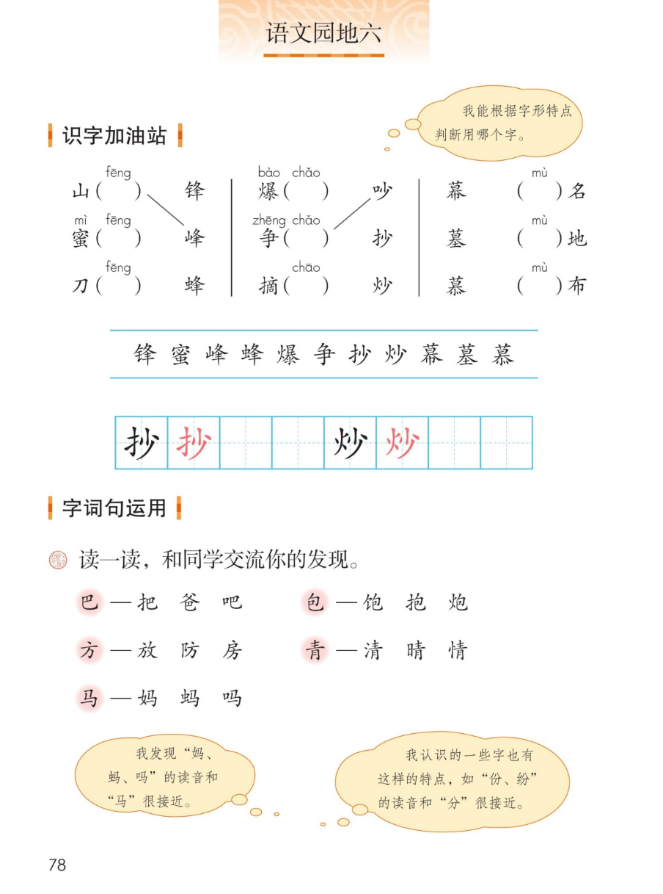
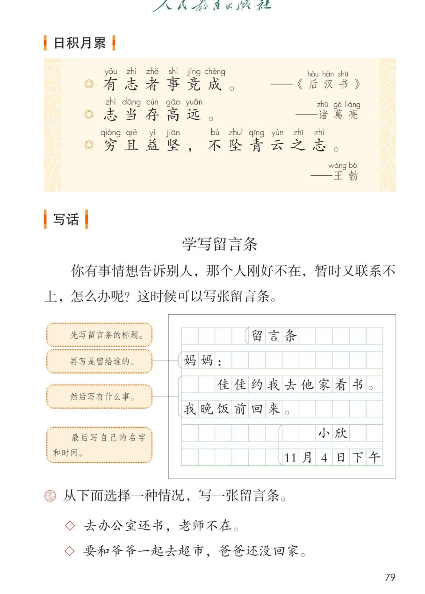
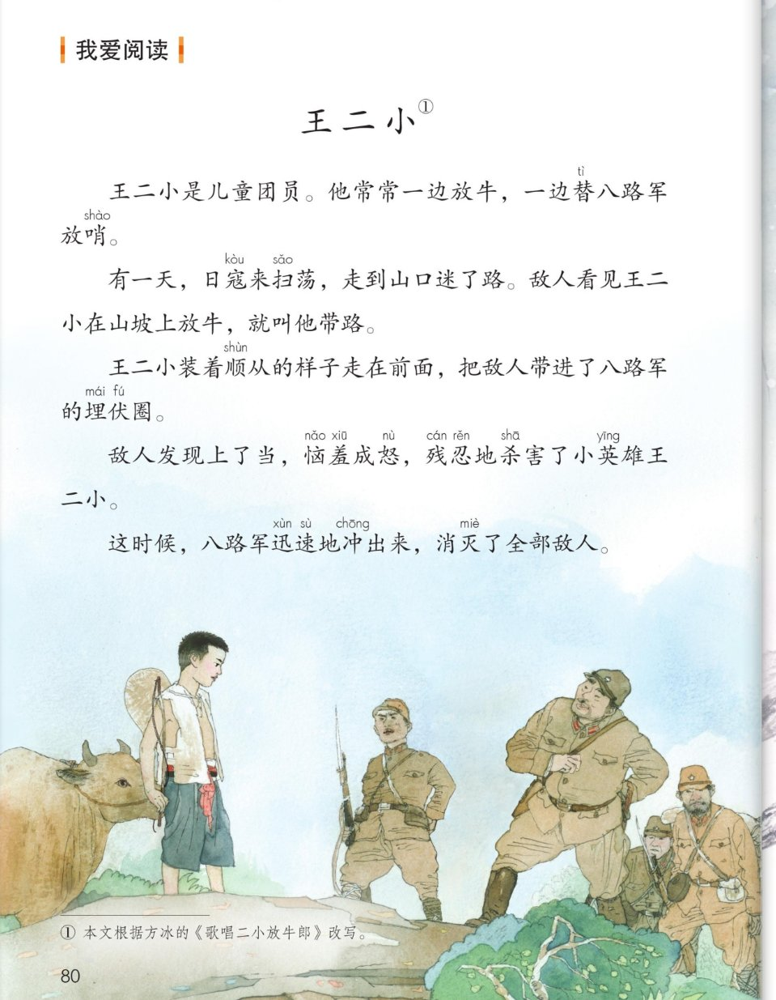

统编版 · 二年级上册 · 第六单元
第六单元 · 单元课件
语文园地六 · 选字填空 · 形声字 · 立志名言 · 留言条 · 王二小
课本第 78~80 页，点哪句读哪句
选字识字 11 字
会写 2 字
形声字 5 组
名言 3 句
留言条 1 篇
故事 1 篇
闯关 8 题
这个单元学了什么：八角楼上、朱德的扁担、难忘的泼水节、刘胡兰——都是革命先辈的故事。
语文园地六带大家根据字形选字、发现形声字的秘密，学写留言条，再读小英雄王二小的故事。
点一下任一卡片或句子，就能听。
① 识字加油站 · 选字填空
课本第 78 页
先自己选一选，再点括号对答案
课本气泡：我能根据字形特点判断用哪个字。——先看偏旁，再选字。
本页要认的字 · 11 个
都藏在选字填空里，点字听读音
② 写字 · 抄 炒
课本第 78 页 · 田字格
点卡片听书写要点
③ 读一读，和同学交流你的发现
课本第 78 页
点字卡听读音，找一找每组字的秘密
课本气泡：我发现“妈、蚂、吗”的读音和“马”很接近。
课本气泡：我认识的一些字也有这样的特点，如“份、纷”的读音和“分”很接近。
老师的话：这样的字叫形声字——一部分表意思（偏旁），一部分表读音。记住这个秘密，识字又快又准。
④ 日积月累 · 立志名言
课本第 79 页
点哪句读哪句
有志者事竟成。——《后汉书》
志当存高远。——诸葛亮
穷且益坚，不坠青云之志。——王勃
小知识（老师的话）：这三句都是立志的名句。“有志者事竟成”出自《后汉书》，说有志气、肯努力，事情终究能办成；
“志当存高远”是诸葛亮的话，说人要树立远大的志向；“穷且益坚，不坠青云之志”出自王勃的《滕王阁序》，
说处境越艰难，越要坚定志向，不放弃高远的追求。
⑤ 写话 · 学写留言条
课本第 79 页
按四步走，一条留言条就写好了
课本原题：你有事情想告诉别人，那个人刚好不在，暂时又联系不上，怎么办呢？这时候可以写张留言条。
留言条
妈妈：
佳佳约我去他家看书。我晚饭前回来。
小欣
11月4日下午
从下面选择一种情况，写一张留言条
点情境卡，先说一说再写
◇ 去办公室还书，老师不在。
◇ 要和爷爷一起去超市，爸爸还没回家。
老师的话：称呼顶格写，正文空两格，名字和日期写在右下角。
⑥ 我爱阅读 · 王二小
课本第 80 页
点哪段读哪段，想想王二小是怎样的孩子
王二小①
课本注释：① 本文根据方冰的《歌唱二小放牛郎》改写。——王二小为了保护乡亲们和八路军，把敌人带进埋伏圈，自己却牺牲了，他是勇敢机智的小英雄。
⑦ 单元闯关 · 8 题
点选项就判对错，答完自动算分
已经答 0 题，答对 0 题。
课本原页 · 第 78~80 页点图放大

第 78 页 · 识字加油站 · 形声字

第 79 页 · 立志名言 · 留言条

第 80 页 · 我爱阅读 王二小